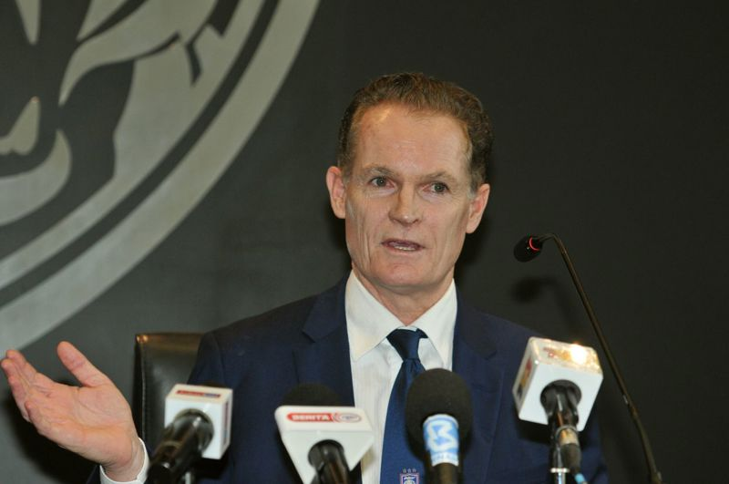

.png)
Thursday, 09 May 2024
JDT technical director Alistair Edwards during press conference at JDT headquarters in Iskandar Puteri on Jan 8.
PETALING JAYA: Johor Darul Ta’zim (JDT) have urged Selangor to reconsider their decision to pull out of the Charity Shield match at the Sultan Ibrahim in Iskandar Puteri on Friday (May 10). Responding to Selangor’s announcement a few hours ago, JDT chief executive officer Alistair Edwards said they are aware and disappointed in Selangor's decision to withdraw from the match despite the assurance from the Inspector General of Police and the Johor Chief Police that the safety of the teams, players and fans will be the utmost priority and that police presence has been tripled to 1,500 personnel.
"We vehemently condemn the incident involving Faisal Halim and the alleged threats received by some members at Selangor but we hope Selangor can reconsider their decision to withdraw from the match as this could set a precedent of teams pulling out because they feel unsafe, and that too despite assurances from the Royal Malaysian Police," he said. "We (JDT) have been attacked in hostile environments in Pahang, Perak and Kelantan in the past but we still travelled and played those matches under increased police presence. Selangor have never been attacked at the Sultan Ibrahim Stadium.
"In fact, their team and fans were escorted by police into the stadium and to their buses in previous matches. "While the recent incidents involving Akhyar Rashid, Faisal Halim and Safiq Rahim are concerning, we must place our trust in authorities to not only investigate the cases but also to protect our safety and ensure the running of the 2024-25 football season."